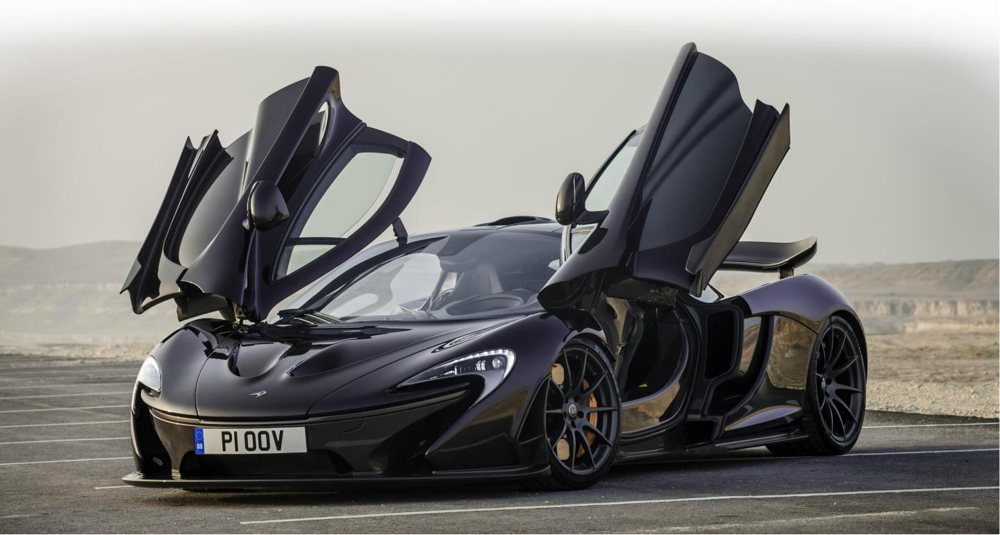
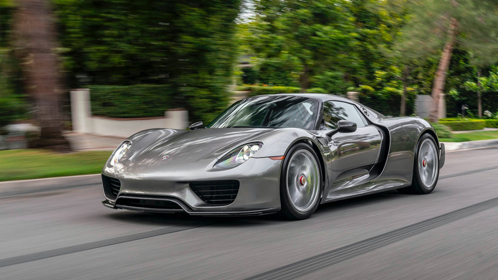

The Bugatti Chiron is one of my favourite hyper cars, as it has a aggressive looking body with a W16 engine coupled with quad turbos, that produce 1500 horsepower. The Chiron also has a top speed of 490.484 km/h.
Learn more about the Bugatti Chiron Bugatti Chiron.

Another one of my favourite Supercars is the McLaren P1. This is a limited-production mid-engine supercar, also powered by a plug in hybrid. It has a 0 to 200 km/h time of 6.8s and has a maximum horsepower of 916 and a maximum torque of 900Nm
Learn more about the McLaren P1 McLaren P1.
Last but not least, one of the most sout after hypercars ever the Porsche 918 Spyder. This is a car that was produced in 2015, with only 1,000 made during that period. The 918 was produced to look like one of the most futuristic cars ever made. This car certainly does live up to the hype as it looks like it was produced recently, not years ago.
Learn more about the Porsche 918 Spyder Porsche 918 Spyder.
